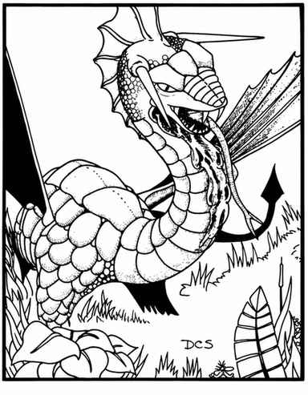

黑龙 · Black Dragon（Draco Causticus Sputern）
 |
|
黑龙通常栖息在瘴气弥漫的沼泽或湿地，也会住在地下巢穴；它们总会选择阴暗深洞筑巢。其阵营倾向于邪恶，介于守序与混乱之间。
黑龙以爪、爪、咬攻击，或喷吐酸液：酸液呈 ½ 寸宽的细流，沿直线喷出 6 寸，方向与角度由龙头在喷吐瞬间朝向决定。能够说话且会施法的黑龙，每个年龄阶段可使用一个一环法术，共 1–8 个。法术为只需言语成分的特殊法术，每日每个法术只能使用一次；随机选取法术，重复结果表示该法术可使用多次。